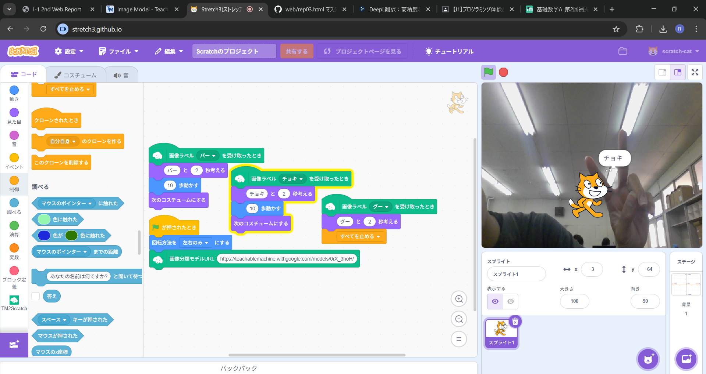
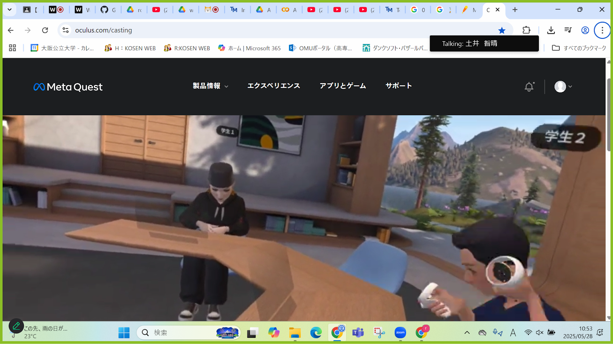
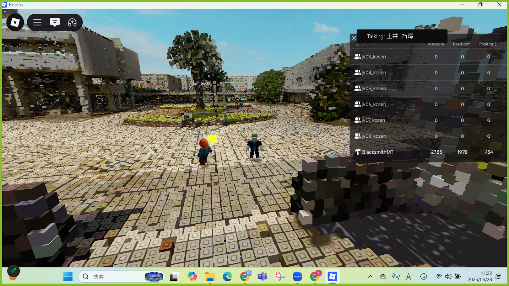

第2週目
2-1 2週目のレポートをHTMLで作る
1.内容
HTMLを用いて、I1に提出する課題レポートのホームページを作成した。撮影した写真をアップロードし、プログラムの修正を行うことで、画像や文字をページ上に表示できるようにした。
2.感想
プログラミングについては、以前に外部の塾に通っており、テキスト言語とビジュアル言語を少しだけ学んだことがあります。しかし、今回の課題では初めて見るコードが多く、最初は混乱しました。ただ、実際の作業は文字を変更するだけのシンプルな内容だったため、安心しました。
2-2 機械学習体験

1.内容
Teachable Machine（機械学習）を使って手の形を認識するプログラムを作成しました。そのプログラムをStretch3にアップロードし、手の形に応じて猫のスプライトが動くように設定しました。
2.感想
去年の体験授業で取り組んだ内容だったので、初めてのことではなく、すらすらと進めることができてとても楽しかったです。また、今回の学習を通して画像認識技術について知ることができたので、今後の学習にも生かしていきたいと思います。
2-3 VR（バーチャルリアリティー：Virtual Reality）の体験
 
1.内容
VRゴーグルを使用して「Workroom」内で椅子を移動させる操作を体験した。また、「Roblox」ではメタバース上に再現された公大高専の空間に入り込み、仮想的な校内を自由に移動する体験も行った。
2.感想
VRゴーグルを使うのは今回が初めてだったため、その高い没入感を実際に体験でき、とても新鮮に感じました。VRの世界に入り込むような感覚が楽しく、授業にも積極的に参加することができました。